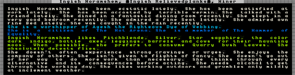
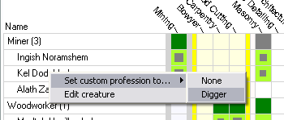

Managing Dwarven Jobs¶
Warning
This tutorial is based on an old version of DF, and needs to be updated.
In this tutorial we’ll look at managing our dwarfs, a topic we have ignored until now. Dwarf management isn’t that hard, but there’s lots of subtlety to it, as I’m sure you can imagine. You also have to learn to navigate the interface, which is its own special challenge!
So lets dive right in! In the end you will find managing your dwarfs well quite rewarding, trust me!
In-game interface¶
Hit u! You will be presented with a list much like this:
On the left, a list of dwarfs with their name and current profession
(the game works out the dwarf’s profession based on their best skill,
unless you assign them a custom profession name, more on that later).
On the right, we have the current job the listed dwarf is doing. You
will note that the list includes more then just dwarfs. You can scroll
up and down using PageUp and PageDown as well as the
arrow keys so have a look around. This is the full list of all living
creatures in the current area (excluding vermin), so it’s a good way
to see how many goblins you’re facing when the inevitable siege occurs!
Had a good look? Great! Now lets get on with working with our dwarfs.
With the first dwarf selected, hit c for Zoom-Cre.
Using this shortcut will become extremely familiar to you as you jump
to this list, select a dwarf, and whack c to see what on earth
they are up to now!
Lets examine what we can see here. On the left we have a yellow X over
the dwarf we selected. If we were to move the X around using the arrow
keys we’d see the info on the right change as the closest dwarf to the
X changes. By the way, you can pull up the X directly without going
through u just by hitting v from the main map. This is
really handy for when you’re trying to work out which dwarf is
skulking around the dining room not doing any work!
So, lets focus back on Ingish Noramshem, Miner. You can see some info
about this stunty. First up, you can go to the l for “Labour”
menu, the e for “Work Dogs”, s for “Soldiering and
Hunting” or you can A “activate” the dwarf. Don’t worry about
any of those just yet! Instead, look at the bottom menu list. We’ve
got z, “View profile” and a list of other shortcuts.
Things can get a little confusing from here, so follow along carefully. For some reason known only to Toady, the coder, the menus get extremely circular, but we’ll get there in the end!
So, hit z, and you’ll see this:
Not much to see. We can see that this dwarf owns 14 things (snore), has a modest quarters. The text is in blue, which I’m guessing is a good thing which means that it is over and above the quality demanded by that noble (thank Ookpik). Below, we can see we have three options, we can hit enter, view relationships with “r” or customize with “y”. Lets go ahead and hit “enter”. Oof! Wall of text!
You’ll have to read this on your own screen to see what it says. In essence it’s a blow by blow of the happy thoughts and sad thoughts of the selected dwarf as well as some bio details. As you will read from the first paragraph Ingish is quite happy, except for the vermin problem (erm, my fault, I forgot to bring any cats with us. A couple of cats will hunt vermin away). On the whole, a content dwarf, which is good. Upset dwarfs go crazy and kill other dwarfs. It’s annoying.
The text in blue concerns the religious and group affiliations of this dwarf. I’ve never found much need to worry about this stuff, although of note is that the god the dwarf worships can be read about in Legends mode. Reading about the gods, creatures and civilisations in your world can be quite an amusing post-game sideline.
Next you’ll see a list of things the dwarf likes. Over time it’s quite possible your dwarf will accumulate items based on the things they like, especially once the dwarven economy kicks in. Of note is that this dwarf likes “cows for their haunting moos”, how strange! Mind you, we could take advantage of this later on by putting a cage in this dwarf’s quarters and shoving a cow in it. Then the dwarf will be happy ever time they see the cow, because it’s a favoured animal of theirs.
Food preferences are interesting as well. This dwarf likes quarry bush leaves. We’re not growing any right now (you need to grow them in an indoors field and then at a Farmer’s Workshop, process them to a bag), but it might be a good idea to grow some if we ever worried about this dwarf’s happiness, or just to ensure those dwarfs that do like quary bush leaves are kept extra happy.
The next block of text covers the personality traits of the dwarf. There’s not much to act on here, although it’s interesting to note the dwarf’s tolerance for the outside world. Over time dwarfs that spend all their time underground will become nauseous at the sight of the sun, which slows them down when they go outside. This can have a big impact on your military and so some fortress designers like to build open air spaces into their fortress. But more on that later.
Don’t be alarmed by the note on drinking. All dwarfs love drink!
With this examining done, space back a menu and hit r.
To be honest, I seldom view this screen and I’m not sure if we really
need to. I just noticed that with the selection over the deity you can
hit v and get information on the god worshipped, cool! This
dwarf worships Agesh, who “often takes the form of a female dwarf and
is associated with fame, rumors, agriculture, the rain and rainbows”,
sounds delightful!
You also get a list of friends here, and in time, partners and children. It’s interesting, but not particularly useful
Anyway, back out of that menu and hit y for “Customize”. You
get an option now, customize nickname and customise profession. Some
people use these to tag their dwarfs for more easy viewing, or to name
them after friends and family for general hilarity, I leave this
option alone because I have plans for them using the Dwarf Manager
utility, but more on that later.
Hit Esc and back out to the main dwarf menu. Hit g for
“Gen”. You’ll see some skill information and stat information for this
dwarf:

As you can see, all of this mining and digging has made our dwarf tough and agile. Ingish is also becoming a skilled miner and is also an adept mason! Other skills have been built up through time in our fortress. There’s more to see than this list though, I’ve highlighted the down arrow which indicates that there are more skills and so use “alt”+”down arrow” and have a look. You should see “Dabbling Grower” at the bottom, looks like our shorty has been picking some plants in the fields!
Now, next menu item, hit i for “Inventory”. You will see a list
of items your dwarf is carrying, it should look something like this:
If you want to make this list easier to read, hit Tab a few
times until the menu takes up half the screen. Then you can see all
the item names in full (this tip is especially helpful with some
workshop menus where item names are long). You can use this list of
inventory items to check closely what your dwarf is carrying. Scroll
through each item using the alt-scroll method, and hit Enter
and v if you want to learn more. The inventory screen is one
you’ll use often when dealing with the military side of Dwarf
Fortress. Don’t worry too much about it for now.
Lets move on and hit w. This is a list of wounds:

White is good. Nothing injured. Light grey indicates bruised, yellow indicates broken, red, mangled and grey is “lopped off”. In a game I’m playing now I currently have a goblin I stuck in a special goblin pit with both eyes missing after a fight with my dwarfs (and those are the only wounds! Good shot marksdwarfs!). He keeps wandering around and passing out before waking up and wandering around again, no doubt bumping into other goblins before collapsing again. Ok, so I found it amusing, anyway…
What you can’t immediately see in this list are organs. Yes, Dwarf Fortress does model internal organs! If your dwarfs, or critters, get wounded, you can see exactly how much and to what degree from this screen. Dwarfs that get wounded will be taken (or make their own way) to your barracks where they will be fed, watered (you need a bucket made in the carpenters for your dwarfs to fetch water for the injured dwarf) and left to recover. This can take a substantial amount of time, weeks, months or even years! And they may never recover from some injuries.
Hit p to be taken back to the info-screen about that dwarf. For
now, ignore the “Activate” and “Work Dogs” option (we have no trained
dogs yet) and lets focus on “Labour”. When you hit l you’ll see
a screen like this:
What you’re looking at is a big, big list (it goes down a couple of pages) of different “labours” that the dwarf is enabled for. The jobs in white are turned on, the ones in grey, off. At the bottom of the list are all the hauling jobs, from stone hauling to cleaning.
An important job in DF is thinking about and managing the labours of your dwarfs. For example, do you want your wood cutter to also have hauling jobs on? If they have that job on they’re going to spend their time cutting wood and then walking half way across the map to move a piece of food to a food store, and then walk back across the map to go back to chopping. Perhaps it would be best if you turn off the hauling jobs on your woodcutter? How about your miner? Do you have a lot of mining work to do? Turn off all the jobs except mining and your digger will drink, eat, sleep, rest and dig, and that’s all. No distractions!
But hauling jobs are important, so how about turning all the extraneous labours of all those lye makers and potash maker immigrants and turning them into full-time peasant haulers. You can’t go wrong with up to 1/4 of your workforce just hauling stuff and the rest divided between important jobs. At times you’ll want to do a lot of bulk job modifying so you can get a lot of hauling done, or a lot of digging, or whathaveyou. This is especially the case once your fortress grows to a substantial size and you have multiple dwarfs doing about the same sort of job.
Dwarf Therapist¶
Warning
This section uses the precursor to current tools. Look up Dwarf Therapist instead, and admire the fantastic user manual it comes with.
But how does one do this without working ones way through dozens of labour settings for dozens of dwarfs? Well thankfully the answer is at your fingertips! Remember the “Dwarf Manager” shortcut we made right at the start? Good! Run it! If you skipped that step you’ll find “Dwarf Manager” in your Dwarf Fortress folder. Run the exe in there.
If the program doesn’t run, you may need to do some .net installing. You can check this all out at the Dwarf Manager website. ** NOTE: Dwarf Therapist is currently the favoured dwarf management program. You may wish to try it instead. It is fairly self-explanatory and works in much the same way. **
Once you get the program up and running, the first thing you should do is hit the “Load from DF” button in the bottom right of the program. The program will pull all the dwarf data from DF and you should see a screen something like this:

The extremely cunning among you may have noticed that my Dwarf Manager is v0.2, but the one on the website is v0.6. I suggest we all go to the Dwarf Manager website, grab the latest version, and install it on top of the Dwarf Manager folder in your DF folder. Come back when you’re done!
What you’re looking at now is a very neat way of adjusting the labour of large numbers of dwarfs at once. It also gives you a great way of quickly seeing what your dwarfs are set to do, and it allows grouping in useful ways. Please note, in my screenshot I’ve had a few immigrants, so don’t worry if your numbers next to professions don’t match mine.
Now, go through and double click on each profession and expand them out. The green blocks show what labour the dwarf has, the grey dot in the middle shows how skilled they are at that labour – the bigger the dot, the better they are. If you double click on any dwarf name you can pull up more information about the dwarf including their name and profession and what they’re skilled in.
Note that the grey bars across the profession names indicate what is turned on in that profession group. Clicking on those boxes turns on jobs for everyone in that profession. And this is where we can make things easier for ourselves. I’ll show you how:
- Look at your miners in Dwarf Manager.
- Double click on the first one, change their “Profession” to “Digger”.
- Hit enter.
You have now created a custom profession. Now right-click on the next dwarf, chose custom profession, click on “Digger”, like the picture.
Do this for all of your miners, and then hit the bottom right button “Write to DF” (you need to do this to make any change stick, and always click “Load from DF” before making any modifications to!). With this custom profession I now have easy control over groups of dwarfs. I group dwarfs into the following groups, how you do it is up to you though:
- Diggers (miners)
- Farmers (dwarfs who farm!)
- Minions (dwarfs that only haul)
- Crafters (dwarfs with all the craft skills on)
- Brickies (dwarfs who engrave and do masonry)
- Chippies (dwarfs who cut wood and do carpentry)
- Metalers (dwarfs who smelt/armor/weaponsmith)
- Foodies (dwarfs who cook and brew)
…And so on. I’m sure you can come up with a scheme of your own. Anyway, the point is, once you get beyond a dozen dwarfs Dwarf Manager is an awesome way of herding your shorties easily and quickly. Give it a go yourself!
Managing labour is how you get things done. If you see a building or workshop not being built, hit “q” and check to see if there’s a “need XYZ labour” message. If there is, check to see if anyone has the labour on. If they don’t, find someone, and turn it on. Your dwarfs can do just about anything you set them to do, but remember they do it better when they are good at it, not only quicker, but with higher quality.
Keep in mind that mining and wood cutting require specialist tools (a pickaxe and a waraxe respectively). Also note that farmers with no skill may screw up and lose your seed, producing no food. While this is ok when you’ve got a lot of food and farmers and you’re training up some new recruits, it’s not so useful when you are low on food and supplies!
I think this may be enough for this lesson. I am sure I will come up with more useful tips as we go, but now you have the tools to look after your dwarfs so taking advantage of my tips will be no problem!
Next lesson we’re going to get back to expanding the fortress and increasing our uberness!